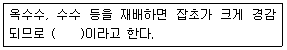
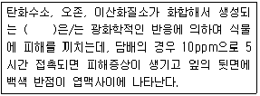

식물보호기사 (2018-03-04 기출문제)
1과목: 식물병리학
1. 십자화과 작물에 발생하는 배추 무 사마귀병에 대한 설명으로 옳지 않은것은?
- 알칼리성 토양에서 발병이 잘 된다.
- 배수가 불량한 토양에서 발생이 많다.
- 순활물기생균으로 인공배양이 되지 않는다.
- 유주자가 뿌리털 속을 침입하여 변형체가 된다.
(정답률: 67%)

2. 식물병 방제 방법에 대한 설명으로 옳지 않은 것은?
- 종자소독제를 이용한 방법: 처리가 간편하고 시간과 노력에 비해 효과가 크다.
- 경엽처리제를 이용한 방법: 농약 사용량을 계속 증가하여도 방제 효과는 크게 증가하지 않는다.
- 토양처리제를 이용한 방법: 작물을 심기 전 주로 유제나 액제를 토양 표면에 남도록 처리한다.
- 훈연제를 이용한 방법: 연무기를 이용한 연무를 살포하거나 약제를 태워 훈연입자를 확산시킨다.
(정답률: 70%)
3. 작물 돌려짓기에 의한 경종적 방제효과가 가장 높은 것은?
- 종자전염병
- 토양 전염병
- 충매 전염병
- 풍매 전염병
(정답률: 81%)
4. 종자로 인한 병균 전염이 가장 잘 되는것은?
- 밀 줄기녹병
- 벼 키다리병
- 보리 흰가루병
- 토마토 배꼽썩음병
(정답률: 77%)
5. 오이 노균병에 대한 설명으로 옳지 않은 것은?
- 잎과 줄기에 발생한다.
- 발병이 심하면 병환부가 말라 죽고 잘 찢어진다.
- 습기가 많으면 병무늬 뒷면에 가루모양의 회색 곰팡이가 생긴다.
- 병무늬의 가장자리가 잎맥으로 포위되는 다각형의 담갈색 무늬를 나타낸다.
(정답률: 51%)
6. 밤나무 줄기마름병의 병반 부위의 전형적인 병징은?
- 천공
- 위조
- 궤양
- 비대
(정답률: 54%)
7. 생물학적 방제의 단점으로 옳지 않은 것은?
- 병이 발생한 후에는 치료의 효과가 낮다.
- 신속하고 정확한 효과를 기대하기 어렵다.
- 넓은 지역에 광범위하게 적용하기가 어렵다.
- 환경의 영향을 많이 받지 않아 처리효과가 일정하지 않다.
(정답률: 81%)
8. 국내에 발생하는 채소류의 균핵병에 대한 설명으로 옳지 않은 것은?
- 잎, 줄기, 열매 등에 발생한다.
- 자낭포자나 균핵에서 발아한 균사로 침입한다.
- 발병 후기에는 발병 조직에 백색 균사가 나타난다.
- 균핵이 땅 속에 묻혀 있다가 25℃ 이상의 고온이 되면 발아한다.
(정답률: 75%)
9. 식물병으로 인한 피해에 대한 설명으로 옳지 않은 것은?
- 20세기 스리랑카는 바나나 시들음병으로 인하여 관련 산업이 황폐화되었다.
- 19세기 아일랜드 지방에 감자 역병이 크게 발생하여 100만명 이상이 굶어 죽었다.
- 20세기 미국 동부지방 주요 수종인 밤나무는 밤나무 줄기마름병으로 큰 피해를 입었다.
- 20세기 미국 전역에서 옥수수 깨씨무늬병이 크게 발생하여 관련 제품 생산에 큰 차지를 가져왔다.
(정답률: 79%)
10. 배나무 붉은별무늬병에 대한 설명으로 옳지 않은 것은?
- 병원균은 순활물기생균이다.
- 병원균이 기주교대를 하지 않는다.
- 주요발병 부위는 잎, 열매, 가지이다.
- 잎에 병무늬가 많이 형성되면 조기 낙엽의 원인이 된다.
(정답률: 82%)
11. 우리나라에서 참나무 시들음병을 일으키는 병원균을 매개하는 것으로 알려진 곤충은?
- 장수풍뎅이
- 솔수염하늘소
- 광릉긴나무좀
- 북방수염하늘소
(정답률: 73%)
12. 뽕나무 오갈병의 치료제로 주로 쓰이는 것은?
- 페니실린
- 그리세오풀빈
- 시클로헥시마이드
- 옥시테트라사이클린
(정답률: 87%)
13. 다른 생물의 사체나 죽은 조직에서만 영양분을 섭취하는 것은?
- 부생균
- 절대기생균
- 임의부생균
- 임의기생균
(정답률: 75%)
14. 병원균이 기주식물에 침입을 하면 병원균에 저항하는 기주식물의 반응으로 항균 물질 및 페놀성 물질 증가 등의 작용을 무엇이라 하는가?
- 침입저항성
- 감염저항성
- 확대저항성
- 수평저항성
(정답률: 51%)
15. 식물 바이러스병을 진단하는 방법이 아닌 것은?
- 그램염색반응
- 지표식물 이용
- 전자 현미경 관찰
- 항혈청반응 이용법
(정답률: 67%)
16. 식물병을 일으키는 곰팡이 중에서 균사에 격막이 없는 병원균으로만 올바르게 나열된 것은?
- 난균, 자낭균
- 난균, 접합균
- 담자균, 자낭균
- 담자균, 접합균
(정답률: 61%)
17. 주로 혈청학적 방법에 의해 진단하는 식물병은?
- 벼 도열병
- 감자역병
- 담배 모자이크병
- 옥수수 깜부기병
(정답률: 73%)
18. 병원균이 담자기와 담자 포자를 형성하는 것은?
- 감자 역병
- 벼 깨씨무늬병
- 배추 무사마귀병
- 보리 겉깜부기병
(정답률: 60%)
19. 도열병이 다발하는 조건으로 가장 적합한 것은?
- 여러 가지 벼 품종을 섞어서 심었을 때
- 가뭄이 계속되고 기온이 30℃ 이상일 때
- 덧거름을 원래 일정보다 일찍 주었을 때
- 비가 자주 오고 일조가 부족하며 다습할 때
(정답률: 84%)
20. 사과 겹무늬썩음병의 병원균은?
- 세균
- 곰팡이
- 바이러스
- 파이토플라스마
(정답률: 53%)
2과목: 농림해충학
21. 성충의 입틀 모양이 서로 다른 것으로 짞지어진 것은?
- 모기, 매미
- 나방, 딱정벌레
- 메뚜기, 풀무치
- 노린재, 진딧물
(정답률: 64%)
22. 4령충에 대한 설명으로 옳은 것은?
- 3회 탈피를 한 유충
- 4회 탈피를 한 유충
- 부화한지 3년째 되는 유충
- 부화한지 4년째 되는 유충
(정답률: 81%)
23. 곤충 체벽의 진피층(epidermis)에 대한 설명으로 옳지 않은 것은?
- 단층으로 되어 있다.
- 내원표피 아래에 위치한다.
- 외표피와 원표피로 구성되어 있다.
- 단백질, 지질, 키틴 화합물을 합성한다.
(정답률: 59%)
24. 우리나라에 비래하지만 월동하지 않는 것은?
- 벼멸구
- 애멸구
- 번개매미충
- 끝동매미충
(정답률: 72%)
25. 1년에 2회 이상 발생하고 수피 사이나 지피물 밑 등에서 번데기로 활동하는 해충은?
- 솔나방
- 밤나무혹발
- 미국흰불나방
- 천막벌레나방
(정답률: 67%)
26. 소나무좀의 방제를 위하여 티아클로프리드 액상수화제를 살포하려 할 때 가장 효과적인 시기는?
- 활동 시기
- 산란 시기
- 유충 부화 시기
- 성충 우화 시기
(정답률: 66%)
27. 발생 계통적으로 기원이 다른 곤충 조직은?
- 중장
- 근육
- 지방체
- 생식소
(정답률: 53%)
28. 마늘 수확 후 저장 과정에서 피해를 주는 것은?
- 파굴파리
- 뿌리응애
- 파좀나방
- 고자리파리
(정답률: 49%)
29. 거미와 비교한 곤충의 특징이 아닌 것은?
- 겹눈과 홑눈이 있다.
- 변태를 하는 종이 있다.
- 4쌍의 다리를 가지고 있다.
- 몸이 머리, 가슴, 배 3부분으로 되어 있다.
(정답률: 83%)
30. 유충이 탈피를 못하게 하여 해충을 방제하는 것은?
- 호르몬제
- 페로몬제
- 대사저해제
- 섭식저해제
(정답률: 56%)
31. 벼를 가해하여 오갈병을 매개하는 것은?
- 벼멸구
- 애멸구
- 흰둥멸구
- 끝동매미충
(정답률: 68%)
32. 어떤 곤충을 상규하였을 때 25℃에서 10일이 걸렸다. 이 곤충의 발육영점온도가 13℃이면 유호적산온도(DD, Degree-Days)는?
- 120
- 150
- 180
- 300
(정답률: 69%)
33. 다음 중 유시류에 속하는 것은?
- 낫발이목
- 톡토기
- 좀붙이
- 하루살이
(정답률: 75%)
34. 간모를 통해 단위생식을 하는 것은?
- 배추순나방
- 점박이응애
- 가루깍지벌레
- 복숭아혹진딧물
(정답률: 65%)
35. 진딧물을 포식하는 천적이 아닌 것은?
- 꽃등에류
- 무당벌레류
- 깍지벌레류
- 풀잠자리류
(정답률: 57%)
36. 완전변태를 하지 않는 것은?
- 버들잎벌레
- 솔수염하늘소
- 복숭아명나방
- 진달레방패벌레
(정답률: 59%)
37. 복숭아심식나방에 대한 설명으로 옳지 않은 것은?
- 유충이 과실 속에 있을 때에는 황백색이다.
- 월동 고치는 방추형이다.
- 1년에 2회 발생하지만 일정하지는 않다.
- 피해 과일에는 배설물이 배출되지 않는다.
(정답률: 50%)
38. 이화명나방의 가해 형태 및 기주 피해에 대한 설명으로 옳은 것은?
- 피해를 입은 벼의 줄기 속에는 한 마리의 유충만 있다.
- 피해를 입은 벼의 줄기 속을 보면 유충의 배설물이 존재하지 않는다.
- 피해를 입은 벼의 앞집이 말라 죽어도 벼의 줄기는 부러지지 않는다.
- 재배 초기의 피해를 입은 벼의 줄기는 출수하지 못하거나, 출수하더라도 이삭이 하얗게 된다.
(정답률: 67%)
39. 온실가루이가 속하는 목은?
- 벌목
- 노린재목
- 강도래목
- 딱정벌레목
(정답률: 74%)
40. 곤충의 배에 있는 부속기관이 아닌 것은?
- 다리
- 기문
- 항문
- 생식기
(정답률: 64%)
3과목: 재배학원론
41. “파종된 종자의 약 40%가 발아한 날”에 해당하는 것은?
- 발아시
- 발아전
- 발아기
- 발아세
(정답률: 65%)
42. 포장을 수평으로 구획하고 관개하는 방법은?
- 수반법
- 일류관개
- 보더관개
- 고량관개
(정답률: 56%)
43. 포장용수량의 수분범위로 알맞은 것은?
- pF 1.5 ~ 1.7
- pF 2.5 ~ 2.7
- pF 3.5 ~ 3.7
- pF 4.5 ~ 4.7
(정답률: 75%)
44. 다음중 C3작물에 해당하는 것은?
- 밀
- 수수
- 기장
- 명아주
(정답률: 63%)
45. 재배의 기원지가 중앙아시아에 해당하는 것은?
- 대추
- 양배추
- 양파
- 고추
(정답률: 54%)
46. 가지를 어미식물에서 분리시키지 않은 채로 흙을 묻거나, 그 밖에 적당한 조건을 주어 발근시킨 다음에 잘라서 독립적으로 번식시키는 방법을 무엇이라 하는가?
- 취목
- 분주
- 선취법
- 고취법
(정답률: 51%)
47. 작물의 주요 생육온도에서 최고온도가 28~30℃에 해당하는 것은?
- 옥수수
- 사탕무
- 오이
- 멜론
(정답률: 47%)
48. 3년 휴작이 필요한 작물은?
- 수수
- 고구마
- 담배
- 토란
(정답률: 51%)
49. 다음 중 복토깊이가 1.5 ~ 2.0cm에 해당하는 것은?
- 토란
- 크로커스
- 감자
- 기장
(정답률: 53%)
50. N : P : K 흡수비율에서 5: 1: 1.5 에 해다하는 것은?
- 옥수수
- 콩
- 고구마
- 감자
(정답률: 58%)
51. 박과 채소류 접목의 특징으로 틀린 것은?
- 흰가루병에 강하다.
- 흡비력이 강해진다.
- 과습에 잘 견딘다.
- 당도가 떨어진다.
(정답률: 46%)
52. 다음 중 단명종자에 해당하는 것은?
- 접시꽃
- 베고니아
- 스토크
- 데이지
(정답률: 69%)
53. 다음 중 중성식물에 해당하는 것은?
- 시금치
- 양파
- 감자
- 고추
(정답률: 53%)
54. 다음 중 혐광성 종자에 해당하는 것은?
- 상추
- 수세미
- 차조기
- 우엉
(정답률: 52%)
55. 완효성 비료에 해당하는 것은?
- 요소
- 황산암모늄
- 염화칼륨
- 깻묵
(정답률: 62%)
56. ( ) 에 알맞은 내용은?

- 휴한작물
- 동반작물
- 중경작물
- 환금작물
(정답률: 68%)
57. 다음 중 천연 에틸렌에 해당하는 것은?
- GA2
- IBA
- C2H4
- MH-30
(정답률: 52%)
58. ( )에 알맞은 내용은?

- 연무
- PAN
- 아황산가스
- 불화수소가스
(정답률: 65%)
59. 다음 분 장과류에 해당하는 것으로만 나열된 것은?
- 배, 사과
- 복숭아, 앵두
- 딸기, 무화과류
- 감, 귤
(정답률: 66%)
60. 다음 중 알줄기에 해당하는 것은?
- 글라디올러스
- 생강
- 박하
- 호프
(정답률: 66%)
4과목: 농약학
61. 제초제, 생장조정제, 살충제, 살균제 등으로 분류하는 농약의 기준은?
- 작용기작에 의한 분류
- 사용목적에 의한 분류
- 주성분 조성에 의한 분류
- 농약의 형태에 의한 분류
(정답률: 85%)
62. 다음 중 해충의 저항성을 가장 잘 유발시킬 수 있는 경우는?
- 살포회수를 적게 한다.
- 동일 약제를 계속 사용한다.
- 다른 약제로 바꾸어 살포한다.
- 작용기작이 다른 농약을 살포한다.
(정답률: 81%)
63. 약해를 일으키는 요인 또는 원인이 아닌 것은?
- 보조제 및 용매에 의한 것
- 주제의 물리, 화학적 성질에 의한 것
- 2종 이상의 약제를 섞어서 살포할 때
- 농약을 사용농도 이하로 희석해서 살포할 때
(정답률: 78%)
64. 피리다명, 페나자퀸은 일반적으로 어떤 농약에 속하는가?
- 살균제
- 살충제
- 살비제
- 제초제
(정답률: 48%)
65. 농약의 제제에 있어서 계면활성제의 역할은 매우 크다. 계면활성제의 작용에 해당하지 않는것은?
- 습윤작용
- 분산작용
- 침투작용
- 살균작용
(정답률: 68%)
66. 살충제 파라티온(Parathion)의 성상 및 특성에 대한 설명으로 옳지 않은 것은?
- 비침투성 약제이다.
- 해충 방제 효과는 좋으나 인축에는 독성이 강하여 제한을 받는다.
- 대부분의 유기용매에 불용이며 알칼리에는 안정하다.
- 접촉독, 가스독 및 소화중독의 세 가지 작용을 함께 가지고있다.
(정답률: 57%)
67. 피레트린(Pyrethrin) 살충제는 충체의 어느 부분에 작용하여 효과를 내는가?
- 원형질독
- 피부독
- 신경독
- 근육독
(정답률: 78%)
68. 다음 급성독성 중 그 강도의 순서가 옳게 나열된 것은?
- 흡입독성 ＞경피독성 ＞경구독성
- 경구독성 ＞흡입독성 ＞경피독성
- 흡입독성 ＞경구독성 ＞경피독성
- 경피독성 ＞경구독성 ＞흡입독성
(정답률: 71%)
69. 농약 제조 시 고체증량제로 일반적으로 사용되지 않는 것은?
- 규조토
- 탈크
- 벤토나이트
- 젤라틴
(정답률: 78%)
70. 살포한 약제가 작물에서 씻겨 내려가지 않고 표면에 붙어 있는 성질을 가장 잘 나타낸 것은?
- 융해성
- 고착성
- 비산성
- 안전성
(정답률: 85%)
71. 자체검사 및 신청검사 시 입제에 대한 최대모집단 수량은 얼마로 정해져 있는가?
- 1톤
- 10톤
- 50톤
- 100톤
(정답률: 68%)
72. 분제 농약 조제 시 가장 충분하게 고려하여야 하는 농약의 물리성은?
- 현수성
- 유화성
- 가용성
- 비산성
(정답률: 66%)
73. 유기인계 살충제의 작용상의 특징이 아닌 것은?
- 알칼리에 대하여 분해되기 쉽다.
- 동·식물체내에서의 분해가 빠르다.
- 살충력이 강하고 적용해충의 범위가 넓다.
- 약해가 비교적 큰 편이며 잔효성도 길다.
(정답률: 63%)
74. 농약의 생물농축의 정도를 수치로 표현한 생물농축계수(BCF)를 바르게 설명한 것은?
- 수질환경 중 화합물 농도에 대한 생물체 내에 축적된 화합물의 농도비를 말한다.
- 농작물에 살포된 농약의 농도에 대한 생물체 내의 독성정도를 나타내는 농도비를 말한다.
- 농작물에 살포된 농약의 농도에 대한 인체에 흡입독성의 정도를 나타내는 농도비를 말한다.
- 재배 중인 작물에 살포된 농약의 농도에 대한 잔류되는 농약의 농도비를 말한다.
(정답률: 53%)
75. 석회유황합제의 주된 유효성분은?
- CaS
- CaS2O3
- CaSO4
- CaS5
(정답률: 48%)
76. 보호살균제의 특성에 대한 설명 중 틀린 것은?
- 균사체에 대하여 강력한 살균작용을 나타낸다.
- 살포 후 작물체 표면에서의 부착성과 고착성이 우수하다.
- 강력한 포자발아 억제작용을 나타낸다.
- 약효가 일정기간 유지되는 지효성이 있다.
(정답률: 50%)
77. 제초제의 살균 기작으로 가장 거리가 먼 것은?
- 광합성 저해
- 호흡작용 억제
- 신경기능의 저해
- 호르몬 작용의 교란
(정답률: 58%)
78. 다음 중 전착효과를 나타내는 물질은?
- 펜크로림(fenclorim)
- 벤토나이트(bentonite)
- 폴리옥시에틸렌(polyoxyethylene)
- 피페로닐 부톡사이드(piperonyl butoxide)
(정답률: 40%)
79. 다음 중 농약의 혼용에 있어서 불합리한 경우는?
- Omethoate + 석회유황합제
- Maneb + Dichlovos
- IBP + Fenitrothion
- Eclifenphos + Fenthion
(정답률: 56%)
80. 다음 농약 중 사과의 부란병에 주로 적용되는 것은?
- 옥솔린산 수화제(일품)
- 이프로벤포스 유제(키타진)
- 사이프로코나졸 액제(아테미)
- 아족시트로빈 수화제(아미스타)
(정답률: 55%)
5과목: 잡초방제학
81. 주로 논에 발생하는 잡초로만 올바르게 나열한 것은?
- 피, 바랭이
- 명아주, 뚝새풀
- 개비름, 물옥잠
- 올미, 여뀌바늘
(정답률: 52%)
82. 제초제가 식물체에 흡수 이행을 저해하는데 관여하는 요인으로 가장 거리가 먼 것은?
- 제초제의 농도
- 식물의 영양상태
- 식물의 형태적 특성
- 제초제의 처리 부위
(정답률: 42%)
83. 광합성 저해형 제초제에 대한 설명으로 옳지 않은 것은?
- 잡초의 탄수화물 축적과 이산화탄소 흡수를 방해한다.
- Paraquat은 과산화물 형성을 통해 살초작용을 나타낸다.
- 대표적으로 요소(urea)계와 트리아진(triazine)계가 있다.
- 주로 광합성의 명반응은 저해하지 않고 암반응을 저해한다.
(정답률: 72%)
84. 잡초 방제법 중에서 예방적 방제법에 해당되지 않는 것은?
- 경운작업을 여러 차례 실시한다.
- 논물 유입로에는 거름망을 설치한다.
- 가축 퇴비를 충분히 부숙시켜 사용한다.
- 외래 잡초의 유입을 막는 제도를 마련한다.
(정답률: 59%)
85. 생태적 방제법으로 환경제어법에 대한 설명이 옳은 것은?
- 작물에 재식밀도를 높여서 초관형성을 촉진시킨다.
- 작물에는 유리하고 잡초에는 불리하도록 인위적으로 환경을 조성한다.
- 묘상에서 자란 유묘를 분포에 이식하여 잡초보다 빠르게 초관을 형성하게 한다.
- 잡초와의 경합력이 큰 작목 및 품종을 선택하여 재배한다.
(정답률: 70%)
86. 우리나라 논에서 발생한 설포닐우레아(sulfonylurea)계 제초제의 저항성 잡초가 아닌것은?
- 피
- 미국외풀
- 물달개비
- 알방동사니
(정답률: 44%)
87. 일년생 잡초로만 올바르게 나열한 것은?
- 벗풀, 매자기
- 보풀, 개구리밥
- 여뀌, 밭뚝외풀
- 올방개, 나도겨풀
(정답률: 46%)
88. 잡초 군락의 변이 및 천이를 유발하는데 가장 크게 작용하는 요인은?
- 경운
- 일모작 재배
- 비료 사용 증가
- 유사 성질의 제초제 연용
(정답률: 79%)
89. 월년생 잡초로만 올바르게 나열한 것은?
- 피, 냉이, 뚝새풀
- 별꽃, 냉이, 벼룩나물
- 냉이, 쇠비름, 벼룩나물
- 쇠비름, 뚝새풀, 벌꽃아재비
(정답률: 72%)
90. 물리적 방제법으로 토양을 피복하는 주요 이유는?
- 잡초 생육에 필요한 물 차단
- 잡초 생육에 필요한 빛 차단
- 잡초 생육에 필요한 공기 차단
- 잡초 생육에 필요한 공간 축소
(정답률: 71%)
91. 잡초 종자에 돌기를 갖고 있어 사람이나 동물에 부착하여 운반되기 쉬운 것은?
- 여뀌
- 민들레
- 소리쟁이
- 도꼬마리
(정답률: 83%)
92. 벼 재배에 주로 사용하지 않는 제초제는?
- 이사-디 액제
- 옥사디아존 유제
- 뷰타글로르 입제
- 알라클로르 유제
(정답률: 47%)
93. 생물적 방제법에 대한 설명으로 옳지 않은 것은?
- 비교적 영속성이 있고 환경 친화적이다.
- 잡초의 완전한 제거하기 위해 적용한다.
- 미생물 또는 식해성 생물을 이용하여 잡초 밀도를 감소시키는 수단을 말한다.
- 경제적으로 무시해도 될 정도의 잡초만 생존하도록 밀도를 감소 조절하는데 있다.
(정답률: 80%)
94. 농경지에서 잡초로 인하여 발생하는 피해가 아닌 것은?
- 토양침식
- 병해충 매개
- 작물 수량 감소
- 작업 환경 악화
(정답률: 81%)
95. 논에 다년생 잡초가 증가하는 요인으로 가장 거리가 먼 것은?
- 답리작 감소
- 시비량 감소
- 물 관리 변동
- 추경 및 춘경 감소
(정답률: 68%)
96. 잡초가 작물보다 경쟁에서 유리한 이유로 옳지 않은 것은?
- 번식 능력이 우수하다.
- 다량의 종자를 생산한다.
- 휴면성이 결여되어 있다.
- 불량한 환경조건에 적응력이 높다.
(정답률: 85%)
97. 잡초의 밀도가 증가되면 작물의 수량이 감소되고, 어느 밀도 이상으로 잡초가 존재하면 작물의 수량이 현저히 감소되는 수준까지의 밀도를 무엇이라 하는가?
- 경제적 허용밀도
- 잡초허용 최대밀도
- 잡초허용 한계밀도
- 잡초피해 한계밀도
(정답률: 76%)
98. 주로 괴경으로 번식하는 잡초로만 올바르게 나열한 것은?
- 올방개, 향부자
- 올방개, 물달개비
- 향부자, 사마귀풀
- 물달개비, 알방동사니
(정답률: 54%)
99. 암발아 잡초 종자에 해당하는 것은?
- 바랭이
- 쇠비름
- 광대나물
- 소리쟁이
(정답률: 69%)
100. 일반적으로 작물과 잡초의 경합으로 작물에 가장 큰 피해를 주는 시기는?
- 모든 시기
- 작물의 생육중기
- 작물의 생육초기
- 작물의 생육후기
(정답률: 80%)